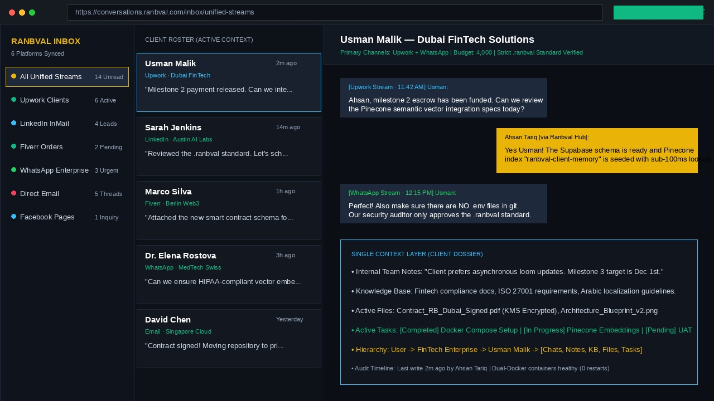
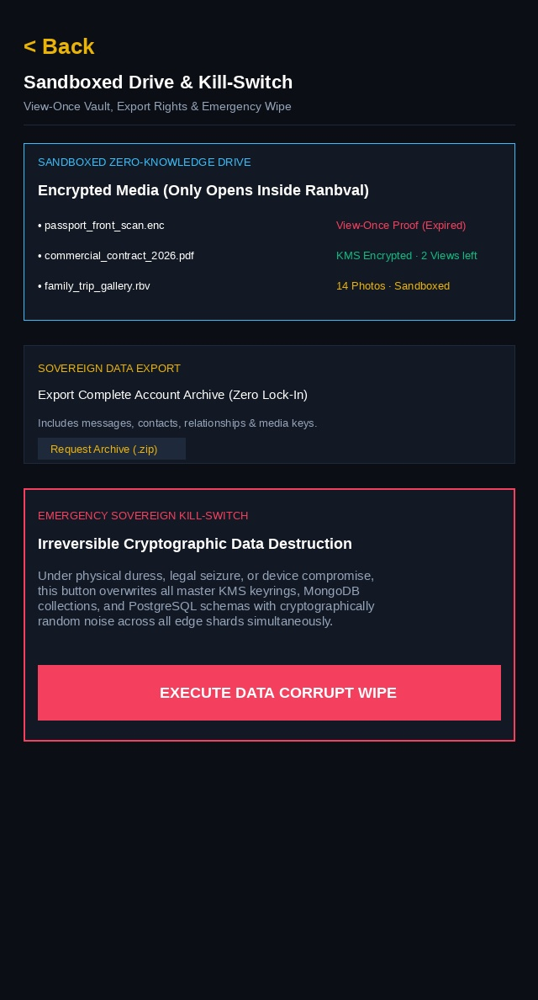
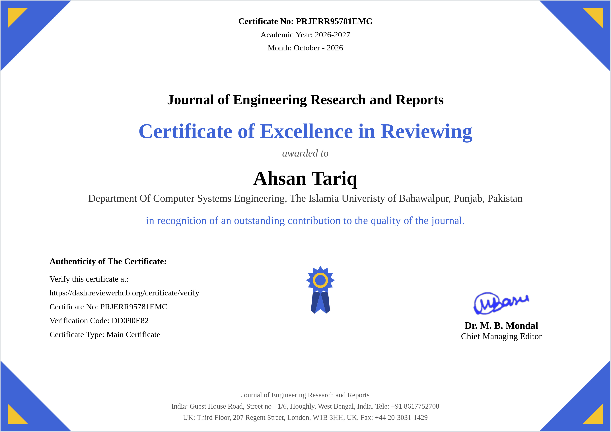
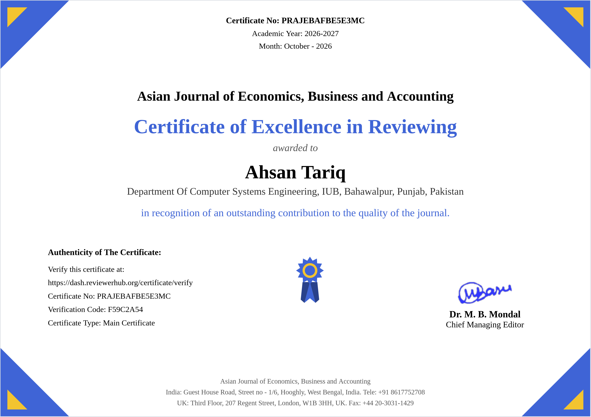
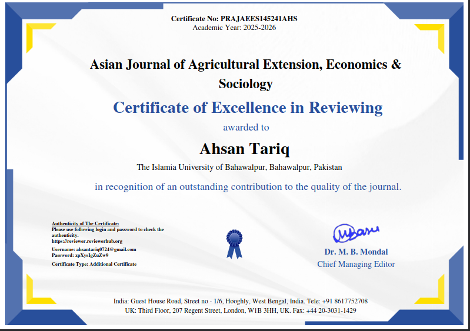
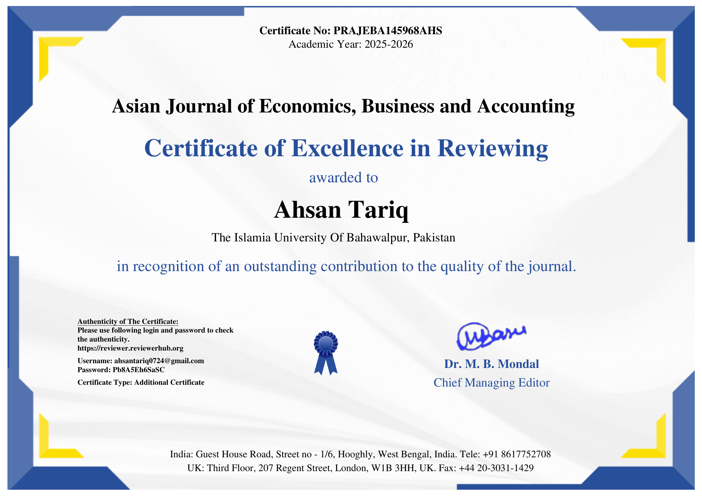

Ahsan Tariq
AI/ML Engineer | Forward Deployed Engineer
Founder of Ranbval & Co-Founder of Volvexer · AI Systems Architect. Designing scalable, maintainable, and readable architectures that power autonomous multi-agent workflows, intelligent accounting & financial automations, and zero-trust cryptographic infrastructure. Dedicated to disciplined zero-to-production engineering — transforming complex systems into resilient, fault-tolerant software built for real-world impact.
LeetCode
81 Problems Solved Algorithms & DSAKaggle Competitions
Expert Rank Top Solved ML SolutionsAcademic Peer Reviewer
5+ Journals · 1 Book WoS Verified ReviewsResearch Publications
6 Papers & Preprints JISRC · Zenodo DOIPyPI & npm Packages
11,500+ Downloads ranbval-sdk · emotion · isgcProduction Systems
20+ Systems Shipped B2B Enterprise & B2C AppsProfessional Summary
Who I Am & What I Do
AI Product Builder, Systems Architect, Founder of Ranbval, and Co-Founder of Volvexer — pioneering automated global accounting & bookkeeping workflows, zero-trust cryptographic secrets vaults, and intelligent multi-agent platforms. Proven track record of taking complex zero-to-production systems from concept to global delivery, driving high-impact solutions across both Enterprise B2B client architectures (multi-tenant ERP portals, real-time NetSuite synchronization, fleet telematics, and automated merchant lifecycle engines) and consumer-facing B2C applications (real-time avatar intelligence, automated video-to-shorts creators, and cross-platform mobile apps) for international clients across the US, UK, and Europe.
Deep engineering foundation rooted in Computer Systems Engineering, bridging Autonomous Robotics & Embedded Systems (ROS / ROS2 node architectures, sensor fusion, Byzantine-resilient perception) with modern Generative AI & LLMOps. Expert in orchestrating multi-agent state machines via LangGraph and LangChain, optimizing production LLM throughput using explicit Gemini context caching (slashing token latency by 85%), deploying hybrid dense/sparse RAG pipelines (Pinecone, MongoDB Atlas), and training deep computer vision models across PyTorch, OpenCV, and zero-shot CLIP.
Champion of disciplined engineering velocity and agile execution, seamlessly leading cross-functional development cycles through Jira, Trello, Linear, Asana, Monday.com, ClickUp, and Notion. Crafts high-throughput data platforms with live NetSuite ERP SuiteQL pipelines, Celery Beat schedulers, and Redis streaming mirrors feeding PostgreSQL 18. Architect of auto-scaling microservices on GCP Cloud Run, Docker multi-stage containerization, automated Cloud Build CI/CD, and repository-bound cryptographic token validation SDKs.
B2B & B2C Delivery
Enterprise ERP portals, merchant onboarding, SaaS, & consumer AI apps
Agile Project Management
Jira, Trello, Linear, Asana, Monday.com, ClickUp & Notion
Robotics & ROS / ROS2
Autonomous perception, ROS2 nodes, edge AI, & sensor fusion
Global Client Delivery
International clients across US, UK, Europe, & worldwide
International Clients & Companies
Built production-grade AI backends, vector search engines, and enterprise automations for international organizations across the United States and Latin America.
Case Studies / Projects
Case Studies / Projects
Explore 23 production systems & in-depth architectural case studies spanning autonomous AI agents, multi-cloud GenAI ops, vector databases, high-throughput microservices, and peer-reviewed deep learning research.
Deep architectural deep-dives into production platforms, cryptographic backbones, zero-trust microservice runtimes, and engineering frameworks engineered for hyperscale reliability.

Ambica International (Dovetail): Autonomous Operations Portal & Real-Time Logistics Backbone
Transforming a nationwide healthcare distribution enterprise from manual paper clipboards into an autonomous, 100% digital operations ecosystem on GCP Cloud Run. Features live NetSuite SuiteQL mirroring via Celery Beat & Redis, sub-second multi-modal fleet & air telematics, 1-click micro-approvals (<60s), Azure & SharePoint direct document sync, secure hybrid on-premise physical server gateway, and role-based agentic RAG.

Ranbval: The Next-Gen AI Social Super-Platform
An all-in-one ecosystem uniting Google-caliber scale, Microsoft-level productivity, and next-gen AI agency—where human relationships, multi-persona AI proxies, autonomous social gaming, decentralized milestone freelancing, life memories, and zero-trust cryptographic vaults live under a single unified platform.

Ranbval Conversations: Centralized Client Communication & Semantic Memory
Unifying fractured client conversations across LinkedIn, Upwork, Fiverr, Facebook, WhatsApp, and Email into a single, permanent context layer. Built with React (Vite), Python FastAPI, Supabase PostgreSQL, Pinecone vector embeddings for sub-100ms semantic retrieval, and strict .ranbval configuration standards with zero .env tolerance.

Ranbval-Core: Enterprise Microservices Security Backbone & Framework
How we solved microservice sprawl, fragmented security logic, and contract regressions across the Ranbval ecosystem. Engineered as a centralized Python runtime (ranbval-core) featuring pure ASGI payload auto-decryption (AES-GCM-256 / ChaCha20), distributed JWT revocation via Redis, anti-replay guards, OpenTelemetry tracing, and 100% CI coverage enforcement across 14+ automated pre-commit tools.

My Products
My Own Products
Architect and Founder of the Ranbval ecosystem — a multi-feature SaaS suite operating on a single secure root (ranbval.com) engineered with a vault-first architecture, verified cryptographic access, and zero-compromise security.
Ranbval Secret
Secure Secret Platform Migration & Encrypted API Key Infrastructure
Production-grade API secret & credential management platform that eradicates plain-text .env file leaks. Employs repository-bound cryptographically signed tokens, real-time request authentication SDKs, and a centralized issuance and live telemetry dashboard with zero application downtime.
Ranbval Health
AI Clinical Companion & End-to-End Encrypted Health Record VaultPatient-centric digital health vault providing zero-knowledge encrypted clinical histories, proactive symptom analysis, intelligent medication schedules, and AI-assisted medical record synthesis for doctors and emergency profiles.
Ranbval Social
AI Social Intelligence & Privacy-First Companion PlatformNext-generation social ecosystem combining relationship intelligence, multi-persona AI companions, encrypted media vaults, agent-coordinated gaming, and autonomous blackmail / harassment detection with zero-leak sharing.
Ranbval Discovery
Autonomous AI Research & Deep Scientific Knowledge DiscoveryAgentic research intelligence engine designed to autonomously read and synthesize academic papers, map citation graphs, pinpoint empirical contradictions, and discover interdisciplinary knowledge gaps for researchers.
Ranbval Conversations
Privacy-Preserving Multi-Modal AI Dialogue & Meeting IntelligenceZero-retention conversational platform featuring persistent long-term contextual memory threads, encrypted audio transcription, real-time action-item delegation, and isolated private LLM execution pipelines.
Ranbval Resume
Dynamic AI Interactive Resume & Portfolio Intelligence EngineAn interactive, verifiable candidate intelligence platform where recruiters and technical hiring teams converse directly with an AI candidate twin, query specific codebase implementations, and review cryptographically authenticated achievements.
Domains of Expertise
Areas I Work In
Proven cross-functional engineering specializations bridging autonomous robotics, AI automation systems, deep learning perception, high-throughput data platforms, and zero-trust cryptographic architectures.
Robotics & Embedded Edge AI
Architecting distributed edge perception networks, sensor fusion pipelines, and low-latency on-device intelligence for autonomous robotics and dynamic edge environments. Rooted in Computer Systems Engineering, experience spans ROS / ROS2 node pipelines, Byzantine-resilient multi-agent perception under severe natural domain shifts (adverse weather, fog, low-light), hardware-level IoT telematics telemetry (FleetGPS integration), microcontrollers, and real-time embedded model inference on power-constrained edge hardware.
AI Automation & Workflow Systems
Architecting autonomous zero-human-touch business ecosystems, multi-agent event orchestrations, and mission-critical enterprise RPA pipelines. Experienced in orchestrating high-reliability n8n workflows, Zapier automations, Voiceflow dialog agents, and custom webhook connectors integrating Housecall Pro, Iris CRM, DocuSign, Twilio/OpenPhone, and WhatsApp. Transforms complex multi-system operational loops—from lead qualification and AI quoting to automated dispatch and invoice settlement—into seamless, self-driving engines.
Computer Vision & Video Intelligence
Designing and deploying production spatial vision systems, real-time video intelligence pipelines, and automated media segmentation. Extensive hands-on implementations with zero-shot vision-language foundation models (CLIP), feature pyramid attention architectures, unsupervised industrial defect detection across MVTec AD, MediaPipe 468-point facial mesh tracking, OpenCV video stream processing, and published PyPI computer vision libraries (emotion-analysis).
Data Engineering & Streaming ETL
Engineering mission-critical enterprise data platforms, asynchronous ingestion pipelines, and resilient single-source-of-truth data mirrors. Engineered real-time NetSuite ERP data pipelines via SuiteQL extraction, Celery Beat schedulers, and Redis streaming mirrors across 10+ operational domains into read-optimized PostgreSQL 18. Proficient in distributed AWS Glue, S3 data lakes, async connection pooling, schema migrations, and multi-tenant data layer architectures.
Deep Learning & Neural Architectures
Developing, fine-tuning, and evaluating deep neural networks across PyTorch and TensorFlow for high-dimensional representation learning and pattern recognition. Specialized in vision transformers, deep convolutional neural networks, reconstruction autoencoders, attention mechanisms, and transfer learning workflows. Core contributions validated through peer-reviewed academic research published in JISRC and IEEE-indexed computer science venues.
Reinforcement Learning & Multi-Agent Systems
Formulating sequential decision-making policies, dynamic state-reward optimization loops, and distributed multi-agent coordination frameworks operating under stochastic uncertainty. Experienced in proxy-agent networks, game-theoretic negotiation protocols, trust-gated aggregation mechanisms, adversarial resilience against poisoning attacks, and self-directed agentic state machines built on modern graph runtimes.
Machine Learning & Predictive Analytics
Developing high-accuracy predictive models, statistical classification pipelines, and feature selection engines with strict mathematical rigor. Ranked Kaggle Expert with 81+ solved competitive problems; engineered novel ANOVA F-test statistical feature selection and variance-smoothed Gaussian Naive Bayes pipelines achieving 98.67% accuracy on benchmark intrusion distributions (UNSW-NB15) with minimal false alarms.
Generative AI, LLMOps & Agentic Systems
Engineering production enterprise Generative AI ecosystems, multi-agent orchestrations, and high-performance context architectures. Architected Claude 3.5 Sonnet ops-intelligence webhook pipelines, Gemini 2.5 Pro explicit context caching (/v1beta/cachedContents) to slash token latency by 85%, hybrid dense/sparse RAG vector pipelines (Pinecone, Atlas), and zero-human-touch autonomous service business automations.
NLP & Conversational Speech Systems
Building production speech-to-text intelligence, multilingual translation backends, and low-latency voice interaction systems. Deployed OpenAI Whisper transcription engines with context-aware segmentation, FFmpeg automated subtitle synthesis, bidirectional EN/RU neural translation pipelines, and high-speed text-to-speech (TTS) engines with intelligent memory caching deployed on Google Cloud Run.
Cloud Architecture & Distributed Microservices
Designing scalable, highly resilient containerized cloud infrastructures and automated CI/CD deployment pipelines on GCP, AWS, and Azure. Architected multi-tenant enterprise portals on GCP Cloud Run using FastAPI (Python 3.12), Docker multi-stage containerization, Nginx reverse-proxies, Cloud Build continuous delivery, per-request upstream DNS resolution, and auto-scaling asynchronous architectures.
Cryptographic Systems & Cybersecurity
Pioneering zero-trust secrets orchestration, repository-bound cryptographic token architectures, and automated runtime verification protocols. Founder and architect of the Ranbval cryptographic vault platform; engineered dual open-source runtime validation SDKs (PyPI & npm), 3-layer OTP authentication schemes, MS Entra ID SSO integrations, and high-precision Network Intrusion Detection Systems (NIDS).
Full-Stack AI Product Engineering
Delivering high-reliability end-to-end software products uniting robust backend microservices with responsive user interfaces and developer SDKs. Built multi-tenant enterprise operations portals serving 37 functional modules using FastAPI (Python 3.12) and Cloud SQL PostgreSQL, designed cross-platform React and React Native client applications, and published production-grade runtime verification packages on PyPI and npm registries.
Technical Skills
What I'm Good At
Production-tested tech stack, frameworks, and engineering tooling across AI systems, data architectures, and infrastructure.
Programming Languages
Generative AI & LLMOps
AI Automation & Integrations
Computer Vision & Speech AI
Deep Learning & Machine Learning
Robotics & Embedded Edge AI
Backend & Microservices
Data Engineering & Databases
Cloud & DevOps
Cybersecurity & Cryptography
Project Management & Agile
Freelancing Jobs
Contract Work & Client Jobs

Vectorized Database Software Engineer
AI Email Intelligence project involving MongoDB Atlas Vector Search, LangChain, FastAPI, and RAG architecture for high-performance email response generation.

N8N Expert — Install & Use Crawl4AI
Setting up and configuring N8N with Crawl4AI for advanced web crawling and AI-driven data extraction automation workflows.
Research Projects
Innovation & Research Studies
ANOVA F-Test Feature Selection for Machine Learning-Based Network Intrusion Detection on the UNSW-NB15 Dataset
Stopping Cyber Hackers Before They Cause Damage
Accepted for publication in the Journal of Independent Studies and Research Computing (JISRC - SZABIST) (Production Stage — ID: #429). Developed an accurate, computationally lightweight two-stage network intrusion detector (NIDS) utilizing ANOVA F-statistic ranking to select the top 15 features across binary and multi-class attacks. Attained 98.67% binary accuracy with variance-smoothed Gaussian Naive Bayes and 78.13% multi-class accuracy with Gradient Boosting, accompanied by federated learning privacy-preserving extensions.
 NIDS Architecture
NIDS Architecture
 98.67% Accuracy Scores
98.67% Accuracy Scores
 Multiclass ROC Curves
Multiclass ROC Curves
 Centralized vs Federated
Centralized vs Federated
Trust as a Gate, Not a Weight: Robust Federated Aggregation for Safety-Critical Perception under Natural Heterogeneity
Safety for Connected Self-Driving Cars
Submitted to the Journal of Independent Studies and Research Computing (JISRC - SZABIST) (Under Active Peer Review — ID: #460). Addresses vulnerability in distributed safety-critical multi-agent perception (autonomous vehicles / edge robotics) under natural domain shifts (adverse weather, night) and Byzantine poisoning attacks using a novel hard trust-gating aggregation mechanism.
 Aggregator Accuracy vs Attacks
Aggregator Accuracy vs Attacks
 Perception Domain Shifts
Perception Domain Shifts
 Adaptive Attacker Defense
Adaptive Attacker Defense
 Non-IID Convergence
Non-IID Convergence
Three Paradigms, One Benchmark: A Negative-Result Study of Zero-Shot CLIP, Supervised FPN–Attention and Autoencoder-Based Defect Localisation on MVTec AD
Helping Driverless Cars See in Rain & Heavy Fog
Comprehensive empirical benchmark evaluating foundation zero-shot vision-language models (CLIP), supervised feature pyramid attention architectures, and unsupervised reconstruction autoencoders across all 15 industrial defect categories of MVTec AD.
 Fig 5: 15 Defect Categories
Fig 5: 15 Defect Categories
 Fig 1: Pipeline & Augmentations
Fig 1: Pipeline & Augmentations
 Fig 13: Localisation Heatmaps
Fig 13: Localisation Heatmaps
 Fig 11: ROC & AUC Metrics
Fig 11: ROC & AUC Metrics
Fuzzy Rough Nearest Neighbours Approaches for Emotion Detection in Tweets
Detecting Human Emotion from Social Media Messages
Formulating granular computing and fuzzy rough set nearest neighbor (FRNN) classification frameworks to resolve boundary uncertainty and semantic ambiguity in short social media text. Shipped as the official open-source PyPI package emotion-analysis (v0.1.6) with 2,360+ downloads, integrating BERT & RoBERTa contextual transformer embeddings with Pearson Correlation Coefficient (PCC) benchmarking on SemEval affective datasets.
 Dataset Class Statistics
Dataset Class Statistics
 Joy Emotion Word Cloud
Joy Emotion Word Cloud
 Anger Emotion Word Cloud
Anger Emotion Word Cloud
 Sadness Emotion Word Cloud
Sadness Emotion Word Cloud
ISGC — A Python Package For Summarizing University Student Examination Performance
Automated University Student Exam Analysis
Published research paper & open-source Python framework (isgc) on PyPI and Zenodo (DOI: 10.5281/zenodo.12688032) with 1,725+ downloads. Designed an accurate numerical computing pipeline to calculate Semester GPA (SGPA) and Cumulative GPA (CGPA) according to official academic grading scales. Implements custom precision rounding functions, tabular transcript synthesis with tabulate, semester-wise SGPA progression trendline visualization, and remark distribution analytics across multi-tier grading criteria.
 SGPA Progression Plot
SGPA Progression Plot
 Remarks Distribution
Remarks Distribution
 Automated Tabular Output
Automated Tabular Output
 Official Benchmark Validation
Official Benchmark Validation
Reviewer Credentials
Scientific Peer Reviewer

Journal of Engineering Research and Reports
Cert No: PRJERR95781EMC
Awarded for rigorous peer-review evaluation of cloud-native systems and continuous platform migration architectures.

Asian Journal of Economics, Business and Accounting
Cert No: PRAJEBAFBE5E3MC
Awarded in recognition of outstanding contributions to evaluating warehouse automation and storage technologies.

Asian Journal of Agricultural Extension, Economics & Sociology
Cert No: PRAJAEES145241AHS
Recognized for critical scientific peer review regarding perceived constraints in green product adoption.

Asian Journal of Economics, Business and Accounting
Cert No: PRAJEBA145968AHS
Awarded for high-standard review contributions evaluating enterprise growth and fiscal policies.
Asian Journal of Economics, Business and Accounting
Cert No: PRAJEBA129599AHS
Awarded for rigorous peer-review evaluation on youth credit enhancement and financial risk modeling.
Publications & Research Papers
Published Research Papers
Two-stage network intrusion detector (binary attack vs normal + multi-class attack category classification) on the UNSW-NB15 benchmark. ANOVA F-statistic ranking selects the top 15 features, attaining 98.67% binary accuracy with variance-smoothed Gaussian Naive Bayes and 78.13% multi-class accuracy with Gradient Boosting, alongside privacy-preserving federated learning architectural extensions.
Safety-critical distributed perception in autonomous systems under natural domain shifts (night, adverse weather) and Byzantine adversarial poisoning attacks. Introduces a hard trust-gating aggregation mechanism that outperforms classical soft-weighting aggregators (FedAvg, Krum, Trimmed Mean, FLTrust).
Cloud-native cryptographic infrastructure designed to permanently prevent plaintext `.env` secret leaks in distributed systems. Formulates repository-bound asymmetric encryption with secure in-memory injection and zero-knowledge developer access control.
Automated academic computing and performance summarization Python framework (isgc). Formulates precision floating-point rounding functions, tabular transcript synthesis with tabulate, semester-wise SGPA progression line plots, and remark distribution analytics across multi-tier grading criteria.
Empirical benchmark evaluating zero-shot foundation models (CLIP), supervised feature pyramid attention architectures, and unsupervised reconstruction autoencoders across all 15 industrial defect categories of MVTec AD.
Granular computing and fuzzy rough set nearest neighbor (FRNN) classification frameworks to resolve boundary uncertainty and semantic ambiguity in short social media text for multi-class emotion detection (Joy, Anger, Sadness, Fear). Shipped as the open-source PyPI package emotion-analysis (v0.1.6) with 2,360+ downloads, integrating BERT & RoBERTa contextual transformer embeddings with Pearson Correlation Coefficient (PCC) benchmarking on SemEval datasets.
Education
Degrees & Academic Background
M.S. in Computer Systems Engineering
The Islamia University of Bahawalpur, PakistanAdvanced postgraduate engineering research focusing on Distributed Systems, Advanced Machine Learning, Encrypted Zero-Trust Infrastructures, and Autonomous Multi-Agent Robotics.
B.S. in Computer Systems Engineering
The Islamia University of Bahawalpur, PakistanComprehensive 4-year engineering curriculum. Awarded Ignite National Technology Fund Grant for Capstone FYDP on ML-driven Network Intrusion Detection Systems (NIDS).
Awards & Grants
Honors & Government Grants
NLnet Foundation Research Grant
NLnet Foundation (Netherlands) · NGI Code Supply
Proposal acknowledged & actively undergoing two-round technical review: "Ranbval Secret Manager: Open-Source Self-Hostable Control Plane, Offline Policy Verification, and Multi-Cloud Zero-Trust" (Ref: 2026-11-2d2).
Ignite National Technology Fund Grant
Ministry of IT & Telecom, Govt. of Pakistan
Competitively selected and funded for the FYDP research: "Optimizing Intrusion Detection Systems Through Significant Feature Selection by ML Techniques."
PMYP Laptop Scheme Selection
Prime Minister’s Youth Programme
Awarded high-performance workstation under national competitive merit standing for academic excellence.